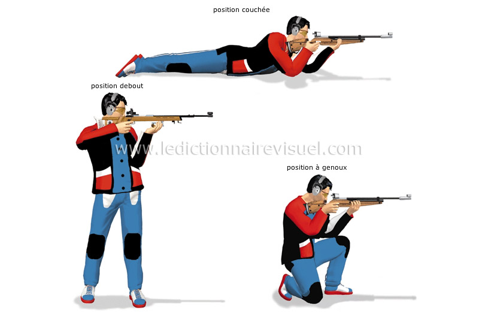

Il existe trois différents types d’épreuves de tir aux Jeux Olympiques : à la carabine, au pistolet et au fusil. Les épreuves de carabines et de pistolet prennent place dans des stands de tir, où les athlètes doivent atteindre des cibles à 10, 25 et 50 mètres de distance.
Il existe en tout 3 position de tir:debout, à genoux et allongé
Le tir est présent depuis les premiers JO modernes en 1896.Le nombre d'épreuves a beaucoup augmenté depuis 1896, il est passé de 5 épreuves en 1896 à 15 aujourd'hui. Les Etats-Unis détiennent le plus de médaille olympique dans cette discipline,puis vient la Chine et enfin la Russie.
Sommaire